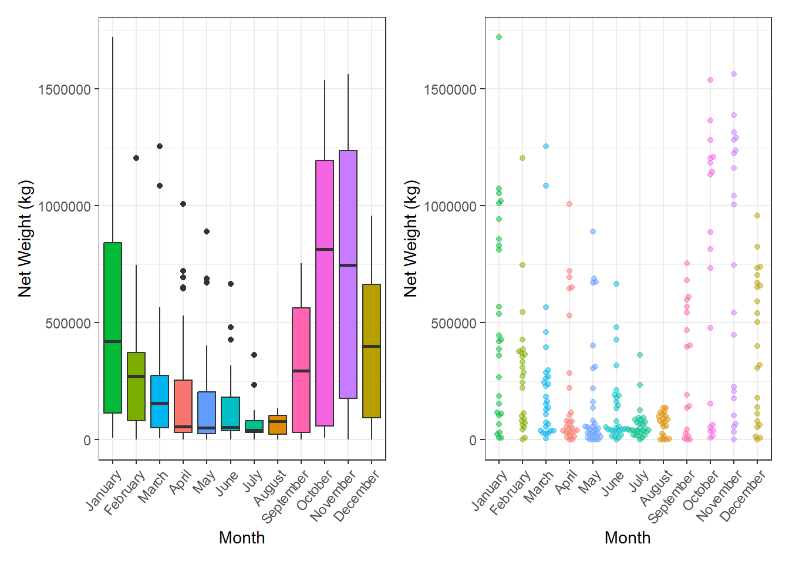
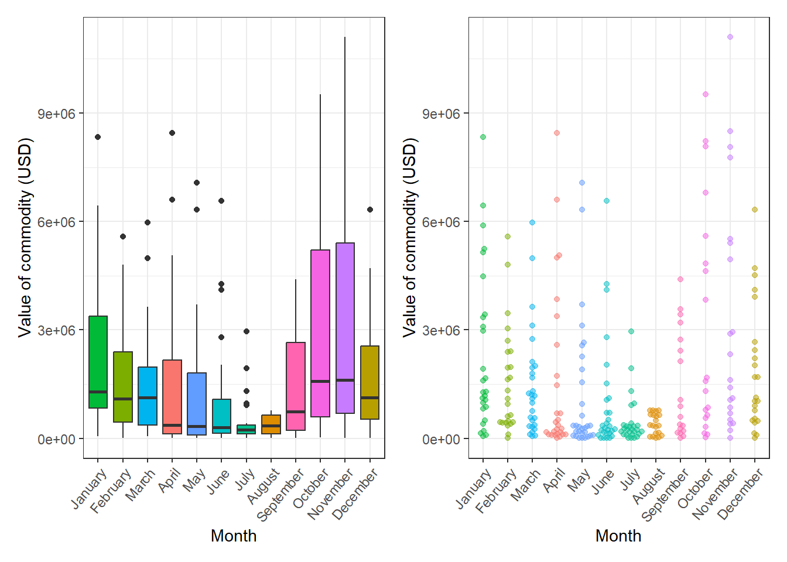
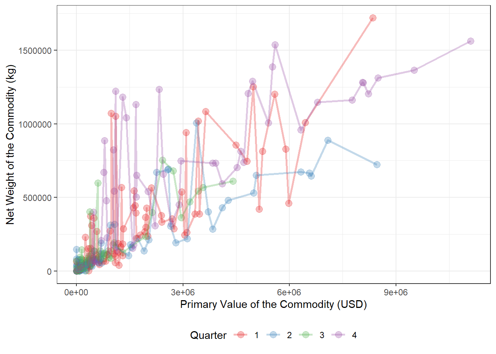
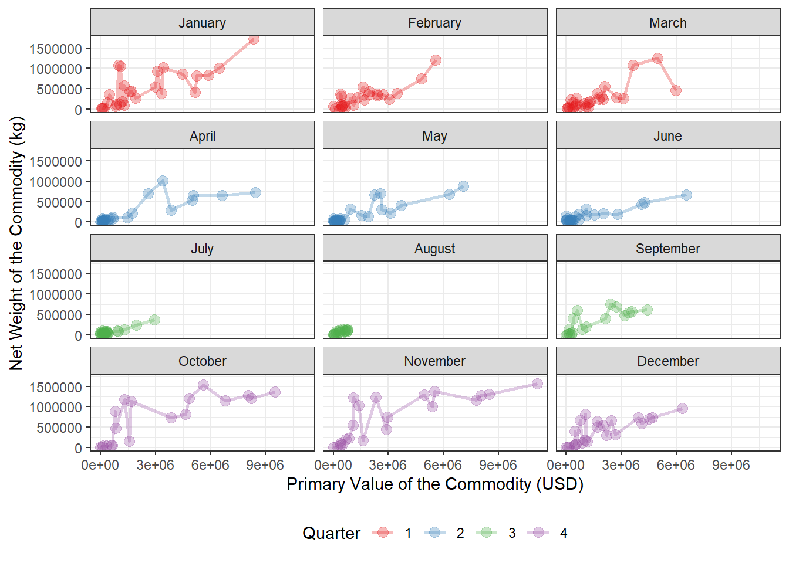
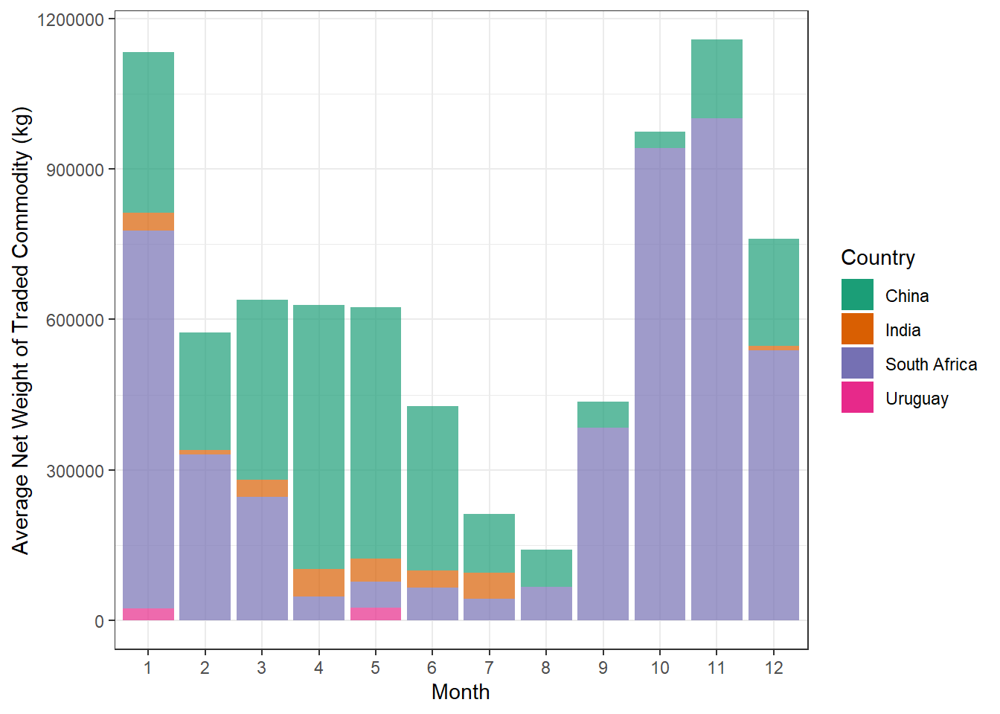
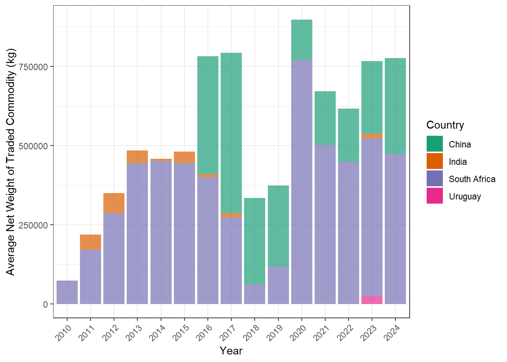

| ref_year | ref_month | reporter_desc | net_wgt | primary_value | month_desc | quarter |
|---|---|---|---|---|---|---|
| 2010 | 1 | South Africa | 360890 | 486974.381 | January | 1 |
| 2010 | 2 | South Africa | 2048 | 347266.594 | February | 1 |
| 2010 | 3 | South Africa | 27869 | 65188.944 | March | 1 |
| 2010 | 4 | South Africa | 27 | 12909.728 | April | 2 |
| 2010 | 5 | South Africa | 2 | 2875.444 | May | 2 |
| 2010 | 6 | South Africa | 57268 | 247169.518 | June | 2 |
Lesotho Wool Trade
The August 4th Tidy Tuesday Challenge is all about the Lesotho Wool Trade. The data for the challenge was sourced from the comtradr R package.
The Lesotho economy is heavily dependent on the wool trade with over 800,000 herders tending to the country’s sheep and goats. The people of Lesotho are referred as the Basotho. This Tuesday takes a look at the impact of the winter months on the wool trade as well as the countries that import wool from Lesotho.
Question One
The first question of the wool trade challenge is Does Winter (being in the Southern hemisphere, these are the months June, July and August) impact Basotho wool quantity/volume exported and revenue? The data for this question looked at the year, month, net weight , and primary value of the commodity (USD). Two variables were also created for the data, a month description, providing the name of the month rather than the number, and the quarter of the year.
The following six rows is a snippet of the data set used to answer the question.
From this data set the net weight and and primary values of the commodity for each month were looked at separately, both the box plot and beeswarm plot were plotted for each variable grouped together. In these two grouped plots we can notice a significant dip in wool quantity (net weight) and revenue (primary value) during the winter months of June, July and August.


The two grouped plots of net weight and primary value show that two of our winter months (July and August) are heavily impacted in both categories. Meanwhile June is not as impacted in the value of the commodity, with its spread appearing very similar to that of February, March, and September. However the spread of June’s net weight can only slightly compare to September’s with similar max points where as September is more evenly spread and June has more points clustered at the lower end of the net weight.
From looking at the two variables separately I then went on to look at the relationship of the variables. The first scatter plot looks at the relationship of primary value and net weight colored by the quarter of the year.

In the scatter plot above we can see that quarter three has the lowest overall primary value and net weight. We also notice that quarter one and two appear to have similar max value of commodity however Q1 has the higher net weight compared to Q2 which could be due to quarter two having June (one of the winter months). Quarter four then appears to be the best performing in the value of the commodity and nearly matches the first quarter in net weight.
I then separated this scatter plot into the separate months so that we can see the real impact of the winter months. The scatter plots are still colored by the quarter of the year the month falls under for continuity with the previous scatter plot.

In this scatter plot we can see that the winter months (June, July, and August) produce much lower net weight and primary value in wool compared to other months. The only exception to could be the month of June where it is very close to several other months in primary revenue but still fairly low in the net weight category. Ultimately the month that is the most heavily impacted is August.
Question Two
The second question in the wool trade challenge is Which country imports the most Basotho wool at a time on average? For this question I looked at the average imports (Net Weight of Commodity) by year and month separately and which countries were receiving the commodity. The following six rows of each table represents the data used to answer the question. The avg_net_wgt column is recorded in kg.
| Monthly Data | ||
| ref_month | reporter_desc | avg_net_wgt |
|---|---|---|
| 1 | China | 318657.45 |
| 1 | India | 35810.67 |
| 1 | South Africa | 753520.89 |
| 1 | Uruguay | 24051.70 |
| 2 | China | 233033.26 |
| 2 | India | 9020.00 |
| Yearly Data | ||
| ref_year | reporter_desc | avg_net_wgt |
|---|---|---|
| 2010 | South Africa | 73721.33 |
| 2011 | India | 47979.80 |
| 2011 | South Africa | 170772.33 |
| 2012 | India | 64147.80 |
| 2012 | South Africa | 286285.83 |
| 2013 | India | 41265.00 |
Taking a look at the monthly import data I created a bar plot with the x-axis being the number of the month and the y-axis being the average net weight of the commodity (kg). The bars were then filled by the country importing the commodity.

In the bar plot South Africa Appears to be the largest importer with China being second. We also can notice that Uruguay is a fairly small importer, only receiving wool in January and May. South Africa being a large import makes geographical sense since Lesotho is surrounded by South Africa.
The next bar plot looks at the imports by year. The x-axis is the year with the y-axis being the average net weight of the commodity imported (kg) that year. The bars were then filled with the country importing the commodity.

The context of the yearly imports adds to the context of the monthly imports. Since Uruguay only imported wool for one year (2023) it is more understandable that the country would only have data for one month. Also the fact that South Africa has imported wool for the entire span of our data it is also understandable that they have the largest monthly net weight. India’s importing also similarly matches in net weight to it’s monthly net weight. We can see that China entered the wool importing at 2016 and then held the majority of the wool importing business from 2017-2019 then dropped off. This change could be due to the COVID-19 pandemic because we see a gradual increase in China’s importing starting in 2023, China may go back to being the major importer in following years or they may find other countries to import from and stay at the same level as 2023 and 2024.
Summary
Ultimately the production and revenue of the wool trade is impacted by the winter months, more specifically July and August.
From our EDA we can tell that South Africa has imported the most wool yearly except in 2017- 2019 where China was the largest importer. The difference between which country imports the most wool monthly shifts between China and South Africa with China dominating from March to August. South Africa then dominates the wool imports for the other six months.
Sources
Bochtler P, Goers H, Muir C (2026). comtradr: Interface with the United Nations Comtrade API. doi:10.32614/CRAN.package.comtradr https://doi.org/10.32614/CRAN.package.comtradr. R package version 1.0.6, https://CRAN.R-project.org/package=comtradr.
Harmon J, Hughes E (2026). tidytuesdayR: Access the Weekly ‘TidyTuesday’ Project Dataset. doi:10.32614/CRAN.package.tidytuesdayR https://doi.org/10.32614/CRAN.package.tidytuesdayR. R package version 1.3.2, https://CRAN.R-project.org/package=tidytuesdayR.